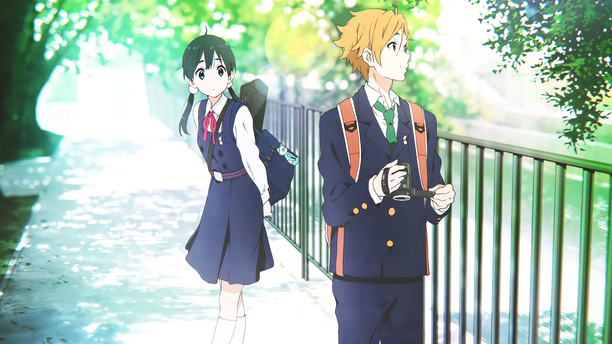

个人信息
姓名: 罗凯
生日: 2002年10月10日
星座: 天秤座
爱好: 乒乓球 | 羽毛球 | cool things (like coding maybe)
21岁，大三，目前就读于西安交通大学计算机系，希望能一直向前走。
A Personal HomePage made by Luo Kai
21岁，大三，目前就读于西安交通大学计算机系，希望能一直向前走。
如你所见的个人主页
均分
大一上：85.26
大一下：83.04
大二上（能动）：89.61
大二下（能动）：86.86
小学期专业实习（能动）：92
大二上（计算机）：90.79
大二下（计算机）：91.94
小学期专业实习（计算机）：98
荣誉
大一：校级三等奖学金，"优秀学生"
大二（能动）：校级三等奖学金
CUPT中国大学生物理学术竞赛校级三等奖
"格兰富杯"节能减排竞赛校级三等奖
第三十四届"腾飞杯"创业赛道校级金奖
第九届中国国际"互联网+"大学生创新创业大赛校赛铜奖
中国大学生数学建模大赛校级三等奖
1. 蒲公英吉他社
大一上加入，初学吉他，犹记一把吉他1300，如今放在宿舍当摆设吃灰，初学时拿起是一首《天空之城》，几年过去了放下还是一首《天空之城》。
2. 仲英学辅
大二上（能动）加入，进入宣传部，学会了制作推送，拥有了自己的微信公众号"追逐太阳的鱼"，如今已经待了两年，成为了宣传部部长，学辅副主席。
3. 挑战网
大二上（计算机）加入，真正意义上对我有帮助的社团，在这里，我学会了真正的制作网页的能力，学到了一些实用性的工具，对自己感兴趣的方向也更加清晰了一些，靠着新学会不久的制作网页的能力，
第34届腾飞杯上由于少有人会制作网页，所以幸运的我被大佬团队找到，带了个腾飞杯金奖，属于是抱大腿了，而且竟然还有一个月300的工资（属于是得了便宜还卖乖了，未曾设想过的道路，就简简单单地制作了几个我现在看来技术很低的网页，现在看起来真惨不忍睹，就总共拿了1300元的工资，关键是还被带了个腾飞杯金奖，也是第一次大学拿工资），
但是挑战网二考项目在寒假进行，一进寒假就摆烂的我无言以对，是自己的劣根性在这里，二考项目没做，自然也就没过，没能正式成为挑战网的一员。如今大三上，选择了再次加入挑战网，把之前没有走踏实的路再走一遍，希望这次能够认清自己，战胜自己，在挑战网走下去。
一段羞于启齿的科研经历，电信学部的"信息新蕾"计划，本科生做科研尝试，自己给老师发邮件联系说明自己的意愿，我选择的是电信学部的鲍军鹏老师，向老师发邮件，简要的说明一下自己的情况，成绩，技能点，最后老师给我分配了一个博士生师姐王瑜带我，师姐很温柔也很厉害，之前还带出过进了新加坡国立大学的本科生，但是由于自己能力不够，科研和学业平衡不过来，加上科研之路道阻且长，第一次接触科研自己毅力不够坚定，这段深度学习相关的科研持续了一个月便戛然而止，现在想来还是那时候能力不够，希望以后能够越来越好吧。